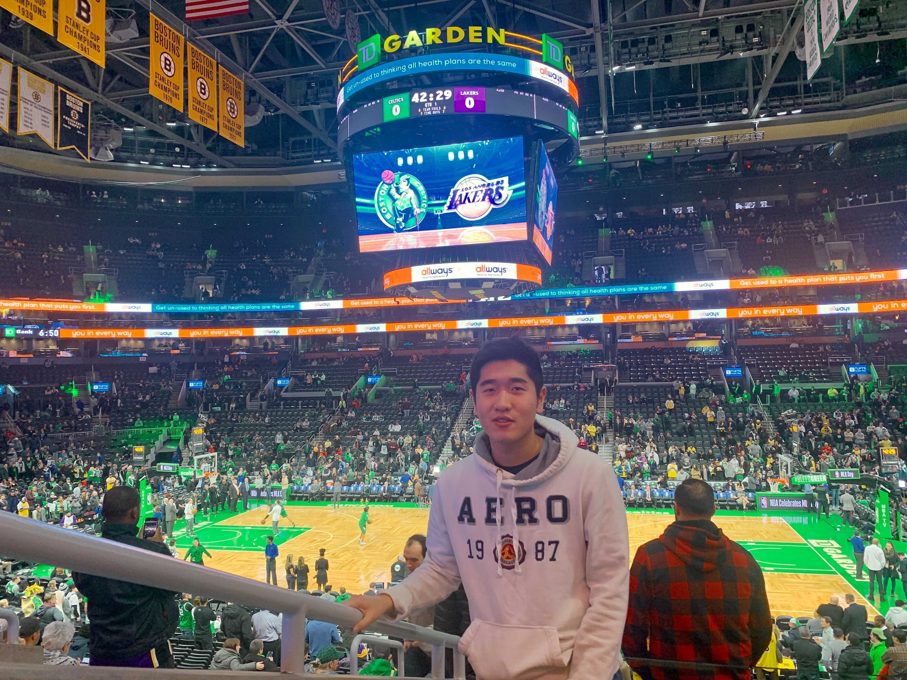

Liangyan (Chris) Ding earned his bachelors degree in Computer Science at Rutgers University in 2017.
During summer 2016, he traveled back to Shanghai and did an internship at KAWO Technology, where he
realized his passion in Software Internationalization. With his unique background, he joined iCIMS as a
Localization Engineer shortly after graduation. In 2020, after a few years in the L10n industry, he
decided to scratch his itch in Software Engineering and joined Amazon as a developer. Currently, he is diving back into the
I18n/L10n domain as a Software Engineer at Audible contributing to its international expansion.

A picture of me at the TD Garden in Boston
Personal Life
Born in Tokyo, Japan; Raised in Shanghai, China, my childhood was full of international movings and
cultural shocks. Finally, I moved to the US with my parents and spent most of my teenage years and
adulthood in New Jersey. Currently, I live in Jersey City with my girlfriend and enjoying the Manhatten view here.
In my spare time, I enjoy tinkering with technologies and playing video games. I occasinally play board games with friends over weekends (I consider myself a professional UNO player😎). I'm also a huge
basketball fan. Mark my words: This is the year Chris Paul wins his championship! (I know I say that every year... smh)